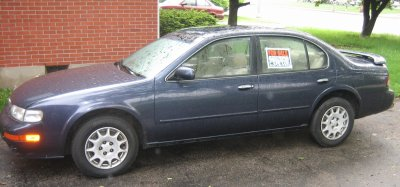
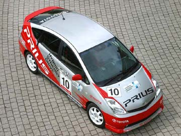
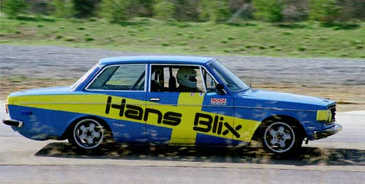

As previously reported, Kelly and I were on The Great Prius Hunt, and as of last night, that hunt came to a satisfying close!

We got a call from Jim Parker over at GreenTree Toyota to let us know that the car was in and that we could seal the deal that evening. After a little wait for the financing lady to finish up with some other folks, we signed our lives away, and rolled on out the door.
This morning, I put the Prius to the real test, which was this: Can it fit all my sailplane stuff in the rear?. The answer to that most critical of questions is Yes, and handily.

¨

Now that Kelly and I have ordered a Toyota Prius, it’s time to sell my beloved 1997 Nissan Maxima. That car has been a good friend to me over the years, but it’s time to move on.
I’ve posted a listing on the Louisville Craigslist, and you can check it out here: 1997 Nissan Maxima, 98k miles.
¨

Kelly and I, for a while now, have been enamored with the Toyota Prius, a gas/electric hybrid that gets roughly 50 miles to the gallon. It’s surprisingly roomy and the drive is nice, and it’s a Toyota, so it has a good safety and service track record. Also, it’s got wicked technical props as well – like the fighter-cockpit-style heads-up display as well as a sweet color touchscreen that controls the interior systems. I mean, duh! It’s a battery powered car with a computer in it. IT MUST BE MINE.
It retails for $21K or so, and so it was out of mine and Kelly’s range for a few years, but now with us very close to not having a car payment and my car (a beloved 1997 Nissan Maxima) getting very close to 100k miles, it would seem the time is nigh for a new auto.
Problem is this – Prius’ ’round these parts rarely sell for their stock MSRP of $21K. In fact, over at Toyota of Louisville, they slid a number across the table to me that included a $3000 mark-up, which I called them on. But lo’, these are the days of the Internet. Thanks to sites like Intellichoice, I know the invoice and MSRP prices of the car, as well as the option packages. Thanks to the Prius-centric PriusChat.com, I am fully aware of all retailers in North America selling their Prius’ for MSRP or under, and current deals and inventory levels. It’s only a seller’s market when the buyer is in the dark, methinks. Currently, I’ve got a lead on Prius’ in Washington DC selling for $1700 UNDER MSRP. A plane ride and a car trip could well save me a net $1000. Not bad, eh? We’ll see. Stay tuned!
Update 2006.04.07: My 97 Nissan Maxima busted it’s proverbial gut last night. After getting it back from Smith Import Car Service for the 3rd time in 2 weeks, the radiator busted! Excellent. That car knows it’s being sold.
Further update 2006.04.17: Kelly and I ordered a Prius from Greentree Toyota last Friday! Either in the Magnetic Gray or the Barcelona Red color. It’ll be ordered by the dealer on Thursday. No definite word on the wait just yet, but it would seem like 30-60 days.
¨

I’ve always been a passive automotive fan. I attended car shows with my dad as a youngster, and pined over a Willys Jeep and a ’57 Chevy Nomad wagon later on. I’ve owned a ’69 Volkswagen (automatic stickshift), a ’74 Ford Maverick, and an ’85 Volvo 240 (with a crank sunroof!) All of which I’ve cared for and done routine maintenance on. I enjoy driving, and I enjoy the very idea of a car as an engineering marvel, a sign of the times and as a veritable playground of the imagination.
But, these feelings have always lain a little dormant, a little behind-the-scenes. I don’t think about it every time I get into a car and my Nissan Maxima has really just been my Point-A to Point-B machine for the last 5 years. I’ve been complacent.
That is until recently. I watch Mythbusters on the Discovery Channel most Wednesdays with Kelly – and about a month ago they started showing this program called Top Gear from the BBC. Top Gear is hands-down the best review show I have ever seen. Bar-none. They review everything from super-cars to compacts to the oddballs you’ll never see. Throw in ridiculous races (Ferarri vs. Jet Plane, Pigeon vs. Citroen), an enigmatic test driver named “The Stig”, tons of spot-on British humor, hatred of caravans, and an absolute heap of passion about cars and you’ve got it. It’s unlike anything you’ve seen or will see about cars and will make you think about hitting the apex next time you go around the corner of your street. I know it has me!
You can watch a clip of Top Gear where they review the awesome Ariel Atom either
here (80 MB WMV) or here (streaming). That is the car in which host Jeremy Clarkson is riding in the image above. 0-to-60 in 2.9 seconds. To quote: “My epiglottis is filled with bees! I’ve got so much nature in my hair you could film an episode of Badger Watch in there!”
Update: Further reviews and such (including another Top Gear segment where a guy from the Top Gear magazine drives the Atom to the Artic Circle and back) here: http://www.openwheelers.co.nz/newmodel/reviews.htm.
¨

…and it opened up my eyes…
¨

point in case. Yamaha touches your heart.
This just in: the transformers have nothing on these trucks. and somewhere, optimus prime weeps in fear.
Thanks to the j-kizzle for the links.
¨

Hey, it’s Cockeyed.com appreciation day! First off,
The Hans Blix Ultimate Fanpage. Next — Cockerham’s Special Report on Those Annoying Work-From-Home signs. Finally, but certainly not leastly — How Much is Inside?
There is a ridiculous amount of content on Cockeyed.com if you can find it as the navigation is often confusing, but keep digging!
In case you were wondering, Hans Blix is not actually a rally driver.
¨
Warren Ellis wrote to me. It was only one word, but damn it was cool. Ellis, for those of you not in the know, is an award-winning writer of comic books. It was quite cool to actually communicate with one of my favorite writers of all time. Do yourself a favor and check out the Transmetropolitan site for more information about one of the most literate, funny, and touching comic books of all time.
After all, anything with the line “If anyone in this shithole city gave two tugs of a dead dog’s cock about Truth, this wouldn’t be happening” deserves to be read.
¨